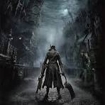
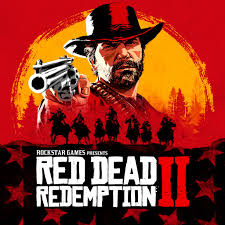
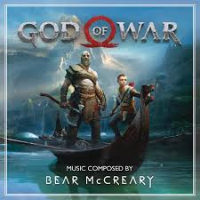
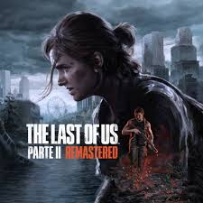
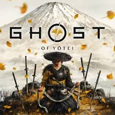
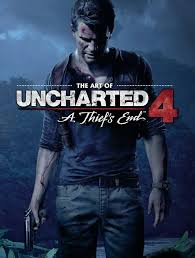
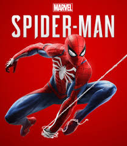
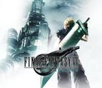
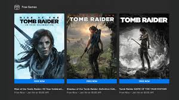
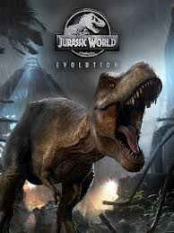

Bloodborne
Um RPG de ação sombrio onde o jogador explora a cidade de Yharnam, lutando contra horrores grotescos e desafiadores.
Learn More →Hollow Knight
Metroidvania de ação e aventura onde você explora Hallownest, um mundo subterrâneo cheio de segredos.
Learn More →

Red Dead Redemption
Jogo de ação e mundo aberto no Velho Oeste, onde John Marston caça antigos companheiros para proteger sua família.
Learn More →
Horizon Zero Dawn
RPG de ação onde Aloy, uma caçadora, explora um mundo pós-apocalíptico dominado por máquinas.
Learn More →

God of War (2018)
Kratos e seu filho Atreus embarcam em uma jornada mitológica pelos reinos nórdicos, enfrentando deuses e monstros.
Learn More →

The Last of Us Part II
Continuação do aclamado The Last of Us, acompanha Ellie em uma história intensa de vingança e sobrevivência.
Learn More →

Ghost of Tsushima
Jin Sakai, um samurai, deve proteger Tsushima da invasão mongol no Japão feudal.
Learn More →

Uncharted 4: A Thief’s End
Nathan Drake retorna para sua última aventura em busca de um tesouro perdido.
Learn More →

Spider-Man (2018)
Assuma o papel de Peter Parker, o Homem-Aranha, enquanto enfrenta vilões e tenta equilibrar sua vida como herói.
Learn More →

Final Fantasy VII Remake
Reimaginação do clássico Final Fantasy VII, trazendo gráficos modernos, combate dinâmico e expansão da história de Cloud.
Learn More →

Tomb Raider (Saga)
A franquia Tomb Raider segue Lara Croft em suas aventuras arqueológicas cheias de ação, exploração e quebra-cabeças.
Learn More →

Jurassic World Evolution
Simulador de gerenciamento onde você constrói e administra seu próprio parque de dinossauros.
Learn More →